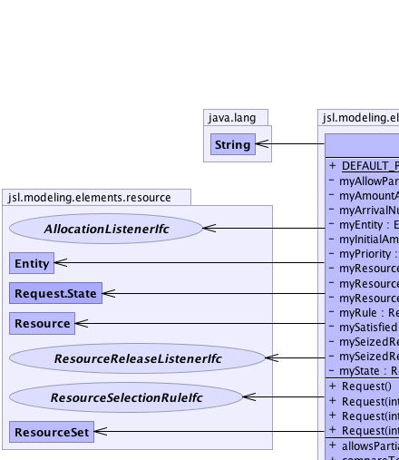
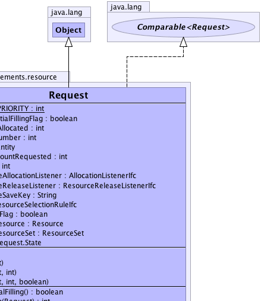
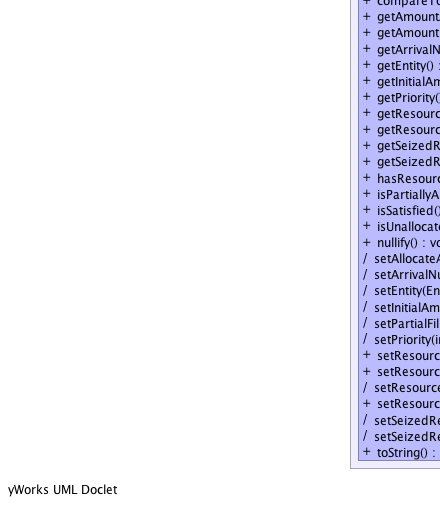
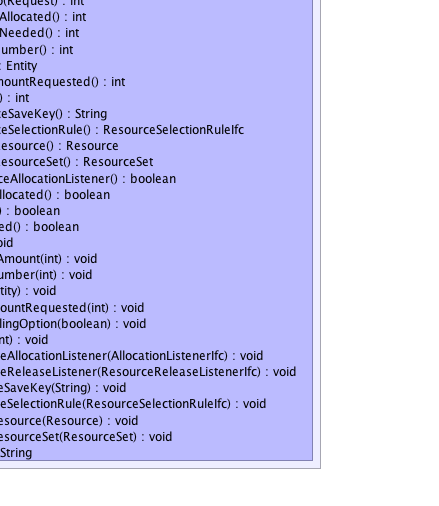

jsl.modeling.elements.resource.Request
jsl.modeling.elements.resource.Request
|
||||||||||
| PREV CLASS NEXT CLASS | FRAMES NO FRAMES | |||||||||
| SUMMARY: NESTED | FIELD | CONSTR | METHOD | DETAIL: FIELD | CONSTR | METHOD | |||||||||
java.lang.Object
public class Request
|  |  |
|  |  |
| Nested Class Summary | |
|---|---|
static class |
Request.State
Unallocated - A state representing when no units of a resource have been allocated to the request PartiallyAllocated - A state representing when units of a resource are allocated to the request FullyAllocated - A state representing when all required units of a resource are allocated to the request |
| Field Summary | |
|---|---|
static int |
DEFAULT_PRIORITY
The default priority associated with Requests |
private boolean |
myAllowPartialFillingFlag
Indicates whether or not the request allows the amount requested to be partially allocated |
private int |
myAmountAllocated
The amount of resource allocated to the request |
private int |
myArrivalNumber
Indicates the order of arrival to the request's resource |
private Entity |
myEntity
The entity making the request. |
private int |
myInitialAmountRequested
The amount of resource requested |
private int |
myPriority
A priority for use in seizing the resource |
private AllocationListenerIfc |
myResourceAllocationListener
Called whenever units of a resource are allocated to a request |
private ResourceReleaseListenerIfc |
myResourceReleaseListener
Called whenever units of a resource are released by this request |
private java.lang.String |
myResourceSaveKey
|
private ResourceSelectionRuleIfc |
myRule
If the Request is made on a ResourceSet this attribute holds the pertinent resource selection rule |
private boolean |
mySatisfiedFlag
Indicates if the amount allocated has reached the amount requested. |
private Resource |
mySeizedResource
The current resource that the request is allocated to, null if not in a resource |
private ResourceSet |
mySeizedResourceSet
If the Request is made on a ResourceSet this attribute holds the pertinent set |
private Request.State |
myState
Records the state of the request |
| Constructor Summary | |
|---|---|
Request()
Creates a single unit request Note: the request is not ready until it has been used within a resource. |
|
Request(int amtRequested)
Creates a request with the supplied parameters Note: the request is not ready until it has been used within a resource. |
|
Request(int amtRequested,
int priority)
Creates a request with the supplied parameters Note: the request is not ready until it has been used within a resource. |
|
Request(int amtRequested,
int priority,
boolean allowPartialFilling)
Creates a request with the supplied parameters Note: the request is not ready until it has been used within a resource. |
|
| Method Summary | |
|---|---|
boolean |
allowsPartialFilling()
Indicates that the request allows the amount requested to be partially filled |
int |
compareTo(Request req)
Returns a negative integer, zero, or a positive integer if this object is less than, equal to, or greater than the specified object. |
int |
getAmountAllocated()
Gets the amount allocated by the resource to the request |
int |
getAmountNeeded()
Returns the amount needed by the request |
int |
getArrivalNumber()
|
Entity |
getEntity()
The Entity associated with the request |
int |
getInitialAmountRequested()
Gets the original amount requested. |
int |
getPriority()
Gets the priority associated with the request |
java.lang.String |
getResourceSaveKey()
|
ResourceSelectionRuleIfc |
getResourceSelectionRule()
|
Resource |
getSeizedResource()
Gets the resource that the request is using |
ResourceSet |
getSeizedResourceSet()
If the request was made on a ResourceSet then this returns the relevent set (or null) |
boolean |
hasResourceAllocationListener()
|
boolean |
isPartiallyAllocated()
Indicates whether the request has been partially allocated to a resource |
boolean |
isSatisfied()
Indicates whether or not the request has been allocated its full amount, i.e. whether it has been satisfied The request is satisfied if the amount requested equals the amount allocated, i.e. it has been allocated all that it has requested. |
boolean |
isUnallocated()
Indicates whether the request has not been allocated any units from a resource |
void |
nullify()
Sets all internal references to null. |
(package private) void |
setAllocateAmount(int amtToAllocate)
|
(package private) void |
setArrivalNumber(int num)
|
(package private) void |
setEntity(Entity entity)
|
(package private) void |
setInitialAmountRequested(int amountRequested)
|
(package private) void |
setPartialFillingOption(boolean option)
|
(package private) void |
setPriority(int priority)
Sets the priority for this request Changing the priority while the request is waiting has no effect. |
void |
setResourceAllocationListener(AllocationListenerIfc listener)
|
void |
setResourceReleaseListener(ResourceReleaseListenerIfc releaseListener)
A ResourceReleaseListener can be attached to the request and provide behavior right after the request has release units of a resource. |
(package private) void |
setResourceSaveKey(java.lang.String key)
|
void |
setResourceSelectionRule(ResourceSelectionRuleIfc rule)
|
(package private) void |
setSeizedResource(Resource resource)
|
(package private) void |
setSeizedResourceSet(ResourceSet set)
|
java.lang.String |
toString()
|
| Methods inherited from class java.lang.Object |
|---|
clone, equals, finalize, getClass, hashCode, notify, notifyAll, wait, wait, wait |
| Field Detail |
|---|
public static final int DEFAULT_PRIORITY
private Entity myEntity
private AllocationListenerIfc myResourceAllocationListener
private ResourceReleaseListenerIfc myResourceReleaseListener
private Resource mySeizedResource
private int myArrivalNumber
private int myPriority
private boolean myAllowPartialFillingFlag
private int myInitialAmountRequested
private int myAmountAllocated
private boolean mySatisfiedFlag
private Request.State myState
private ResourceSet mySeizedResourceSet
private ResourceSelectionRuleIfc myRule
private java.lang.String myResourceSaveKey
| Constructor Detail |
|---|
public Request()
public Request(int amtRequested)
amtRequested -
public Request(int amtRequested,
int priority)
amtRequested - priority -
public Request(int amtRequested,
int priority,
boolean allowPartialFilling)
amtRequested - priority - allowPartialFilling - | Method Detail |
|---|
public void nullify()
public final void setResourceAllocationListener(AllocationListenerIfc listener)
public final boolean hasResourceAllocationListener()
final void setEntity(Entity entity)
final void setPartialFillingOption(boolean option)
final void setInitialAmountRequested(int amountRequested)
final void setPriority(int priority)
priority, - lower priority implies first to stop waitingfinal void setSeizedResource(Resource resource)
final void setSeizedResourceSet(ResourceSet set)
final void setResourceSaveKey(java.lang.String key)
final void setArrivalNumber(int num)
final void setAllocateAmount(int amtToAllocate)
public final void setResourceReleaseListener(ResourceReleaseListenerIfc releaseListener)
releaseListener - public final int getArrivalNumber()
public final int getPriority()
public java.lang.String toString()
toString in class java.lang.Objectpublic final Entity getEntity()
public final int getAmountNeeded()
public final int getInitialAmountRequested()
public final int getAmountAllocated()
public final boolean allowsPartialFilling()
public final Resource getSeizedResource()
public final ResourceSet getSeizedResourceSet()
public final java.lang.String getResourceSaveKey()
public final boolean isSatisfied()
public final boolean isUnallocated()
public final boolean isPartiallyAllocated()
public ResourceSelectionRuleIfc getResourceSelectionRule()
public void setResourceSelectionRule(ResourceSelectionRuleIfc rule)
public int compareTo(Request req)
compareTo in interface java.lang.Comparable<Request>listener - The requirement to compare this listener to
|
||||||||||
| PREV CLASS NEXT CLASS | FRAMES NO FRAMES | |||||||||
| SUMMARY: NESTED | FIELD | CONSTR | METHOD | DETAIL: FIELD | CONSTR | METHOD | |||||||||